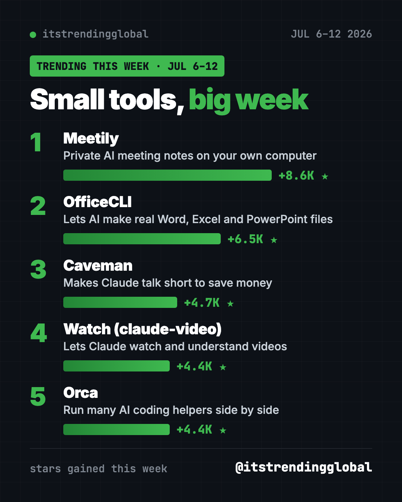
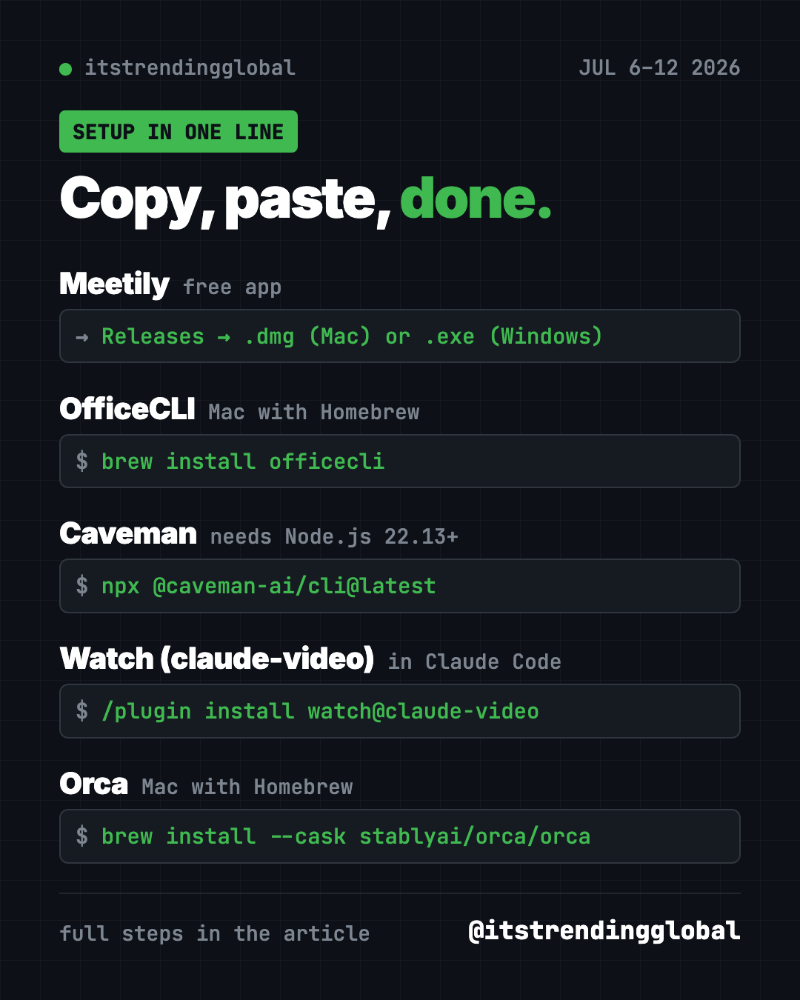

Home › Tools and repos › GitHub trending this week
Trending GitHub Repos July 6-12, 2026: Meetily and More
- Published 15 Oct 2026
- Updated 16 Oct 2026
- 6 min read
- By the ITG Now team
In this guide (9)
The trending GitHub repos July 6-12, 2026 were a set of small, handy tools led by Meetily, a private AI meeting note taker. OfficeCLI, Caveman, Watch for Claude and Orca made up the rest of the top five. No giant launches this week, just useful helpers.
Here's the theme. Each tool fixes one everyday annoyance. Notes that leak to the cloud. AI that can't open a spreadsheet. AI that talks too much, can't watch a video, or makes you juggle five windows.
Key takeaways
- Meetily records, transcribes and summarizes meetings on your own computer.
- OfficeCLI lets AI helpers create and edit real Word, Excel and PowerPoint files.
- Caveman makes your AI helper answer in short "caveman" speak, to save money.
- Watch (from the claude-video repo) lets Claude Code look at a video and tell you what's in it.
- Orca is a desktop app for running several AI coding helpers side by side.

The five tools compared
| Repo | Fixes this | Best for | Stars this week | Get it |
|---|---|---|---|---|
| Meetily | Meeting notes leaving your laptop | Anyone in lots of calls | +8.6K | Mac or Windows app |
| OfficeCLI | AI that can't edit Office files | Office workers using AI | +6.5K | One command |
| Caveman | Long, costly AI replies | Claude Code users | +4.7K | One command, Node.js |
| Watch | AI that can't watch video | Researchers, creators | +4.4K | Claude Code plugin |
| Orca | Too many AI windows | People running several AI helpers | +4.4K | Mac, Windows, Linux app |
Star gains are for July 6-12 only. Totals were checked on October 16, 2026.
1. Meetily: meeting notes that stay private
Stars: +8.6K this week · about 31.8K total
What it is: A free AI note taker that transcribes your calls live and writes summaries, all on your computer. Pair it with Ollama, a free app for running AI models locally, and nothing has to leave your machine.
Who it's for: Anyone who talks about private things on calls: clients, health, salaries, legal plans.
Everyday use: Hit record on a Zoom call and get a summary with action items when it ends.
Install it. Download the Mac .dmg (Apple silicon) or the Windows x64-setup.exe from the Meetily releases page. Then install Ollama from ollama.com and pick it as the summary provider.
Or ask your AI helper:
Install Meetily from github.com/Zackriya-Solutions/meetily for my computer, plus Ollama with a small model, so my meeting notes stay local.
See Meetily on GitHub · Read our full guide
2. OfficeCLI: let AI make real Office files
Stars: +6.5K this week · about 32K total
What it is: A free tool that lets AI helpers create, read and edit Word, Excel and PowerPoint files. You don't even need Microsoft Office installed.
Who it's for: Anyone who lives in documents, decks and spreadsheets.
Everyday use: "Turn these notes into a 6-slide PowerPoint" and get a real .pptx file.
Install it on a Mac with Homebrew. Copy and paste this:
brew install officecli
officecli install
The second line connects it to the AI helpers on your computer.
Or ask your AI helper:
Install OfficeCLI from github.com/iOfficeAI/OfficeCLI and make me a one-page Word summary of this folder's notes.
See OfficeCLI on GitHub · Read our full guide
3. Caveman: why many word when few word do trick
Stars: +4.7K this week · about 112.4K total
What it is: A joke that turned into a real tool. Caveman makes your AI helper reply in short, blunt sentences and read less clutter. The project says it cuts about 65% of tokens.
Who it's for: People who pay for Claude Code or Codex and skim the long replies anyway.
Everyday use: Ask for a bug fix and get the fix, not three paragraphs about it.
Install it. You need Node.js 22.13 or newer. Copy and paste this:
npx @caveman-ai/cli@latest
Say "stop caveman" in a chat to get normal answers back.
Or ask your AI helper:
Install Caveman from github.com/JuliusBrussee/caveman, turn off its usage stats, and show me "caveman status".
See Caveman on GitHub · Read our full guide

4. Watch: give Claude eyes for video
Stars: +4.4K this week · about 18.6K total
What it is: A skill called Watch, from the claude-video repo. You give it a video link or file. It pulls out frames and a transcript, then hands them to your AI helper. It works in Claude Code and Codex, but the README says not in the regular Claude chat app.
Who it's for: Students, researchers and creators who need to know what's in a long video.
Everyday use: "Summarize this 40-minute lecture with timestamps for each topic."
Install it inside Claude Code. Copy and paste this:
/plugin marketplace add bradautomates/claude-video
/plugin install watch@claude-video
It needs Python 3.10+, FFmpeg and yt-dlp. Your AI helper can check for them.
Or ask your AI helper:
Use the watch skill on example.mp4 and summarize what is visible, with timestamps.
See Watch (claude-video) on GitHub
5. Orca: one window for all your AI helpers
Stars: +4.4K this week · about 93.3K total
What it is: A free desktop app for running Codex, Claude Code, OpenCode or Pi side by side. Each one works in its own copy of your project, so they don't trip over each other. A phone app lets you check on them away from your desk.
Who it's for: People who already use more than one AI coding helper.
Everyday use: Give the same task to three helpers, compare the results, keep the best one.
Install it. Download it from onorca.dev, or on a Mac with Homebrew, copy and paste this:
brew install --cask stablyai/orca/orca
Or ask your AI helper:
Install Orca from github.com/stablyai/orca and explain how to run Claude Code and Codex side by side on one task.
Which one should you try first?
- Lots of meetings: Meetily is a normal app. Start there.
- Office worker using AI: OfficeCLI.
- Tired of long AI replies: Caveman.
- Lots of videos to get through: Watch.
- Juggling AI helpers: Orca.
⚠️ Heads up: Only use Watch on videos you have the right to download and view. And tell people when you record a meeting with Meetily.
For the full month, read the top GitHub repos of July 2026 and July 2026 in AI news. Or go back to the week of June 29.
FAQ
What were the trending GitHub repos July 6-12, 2026?
Meetily led with about 8,600 new stars. OfficeCLI, Caveman, Watch (claude-video) and Orca followed.
Is Meetily really free and private?
Yes, it's free and open source under the MIT license. With Ollama for summaries, transcripts and notes stay on your computer.
Do I need Microsoft Office for OfficeCLI?
No. OfficeCLI reads and writes the files itself. You only need Office or another app to open the result.
Does Caveman make the AI less smart?
It changes how the AI talks, not what it knows. You can turn it off any time by saying "stop caveman."
Keep reading

Trending GitHub Repos October 2026: The Top 5 So Far
The trending GitHub repos of October 2026 so far: a free Photoshop-style editor, an AI art studio, a big AI model for gaming PCs and more, explained.

Trending GitHub Repos This Week, Oct 5 2026: The Top 5
Trending GitHub repos this week Oct 5 2026: Matt Pocock's skills, the openGym workout tracker, e2e testing, HyperFrames video and claude-mem memory.

GitHub Trending September 28, 2026: Hindsight and Paperclip
GitHub trending September 28 2026: Hindsight, Paperclip, NVIDIA's OpenShell and a free 542-lesson AI course, with setup steps for each.